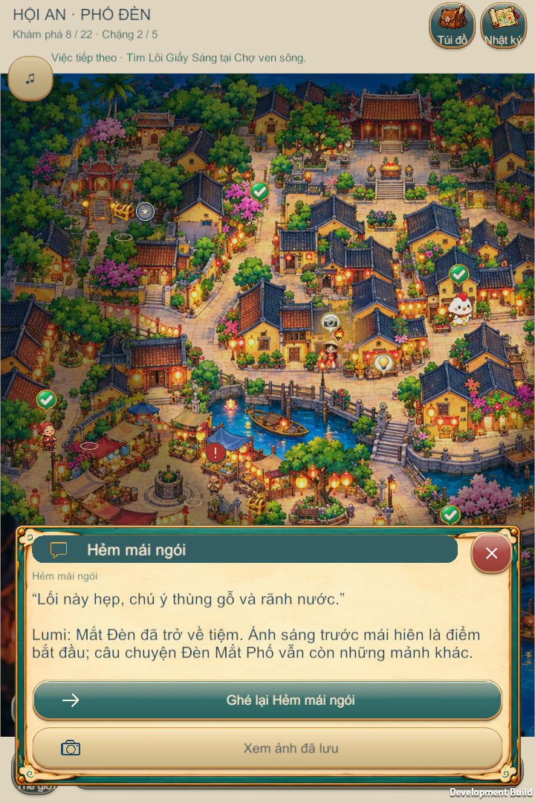
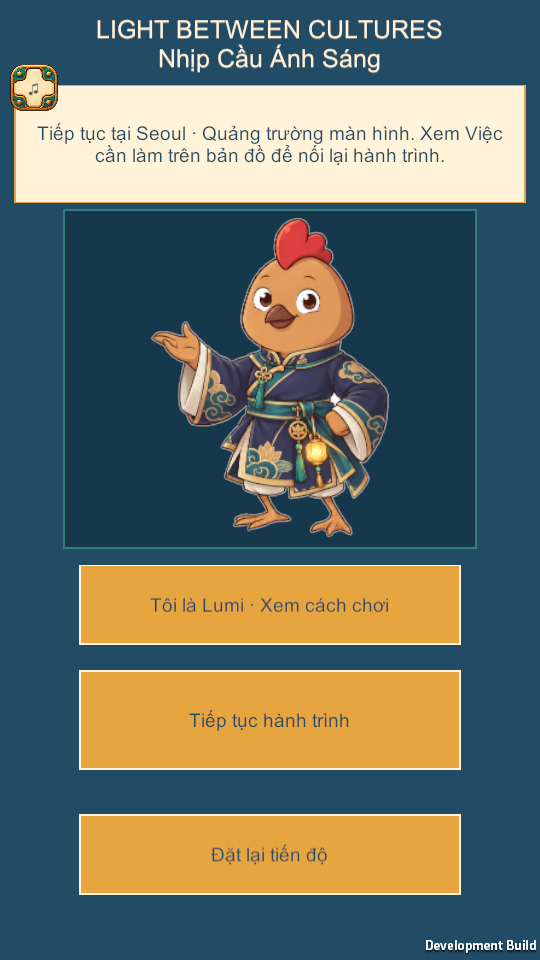
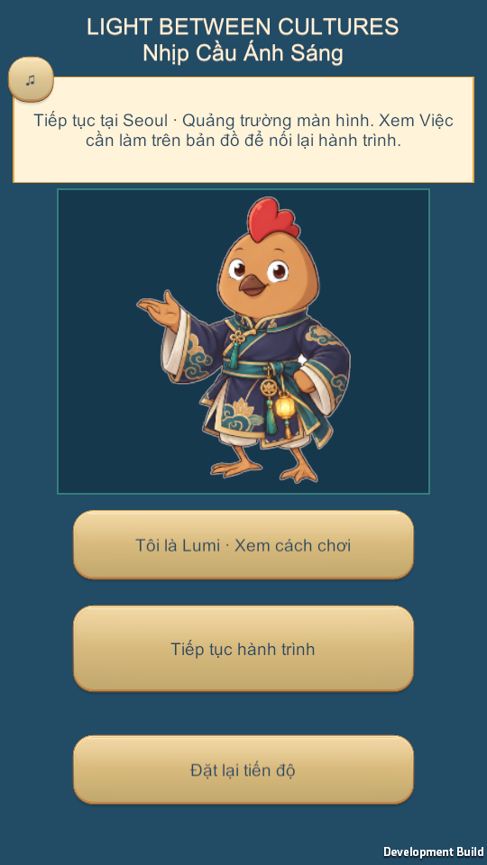
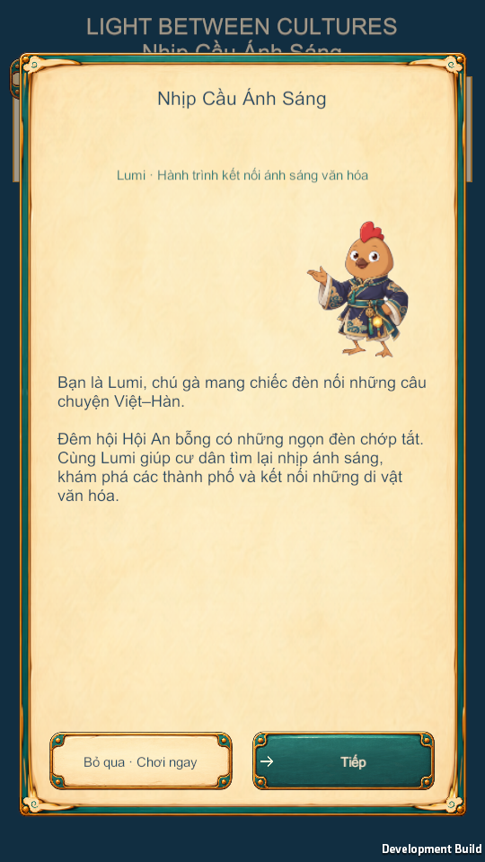
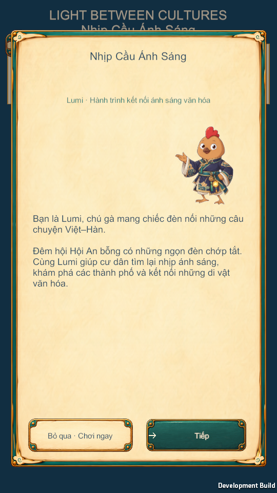
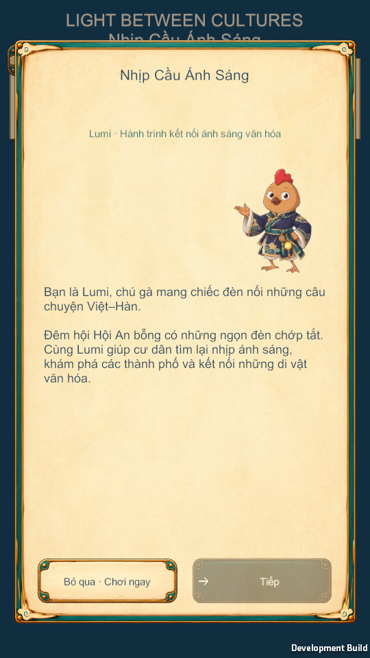
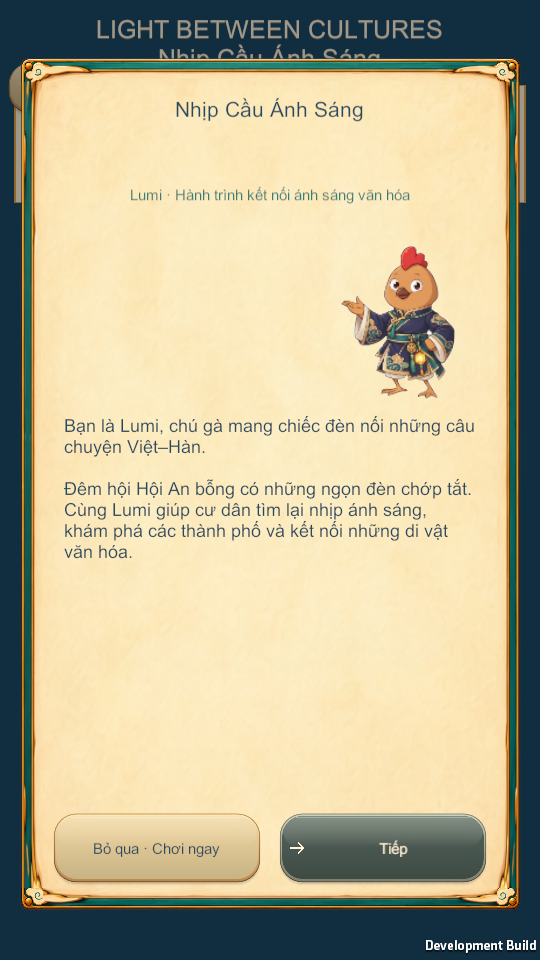
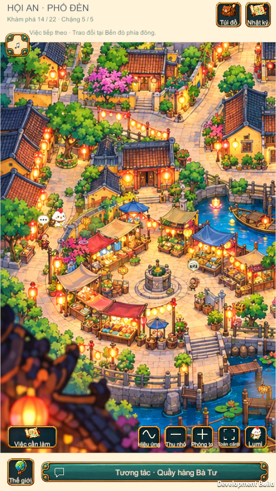
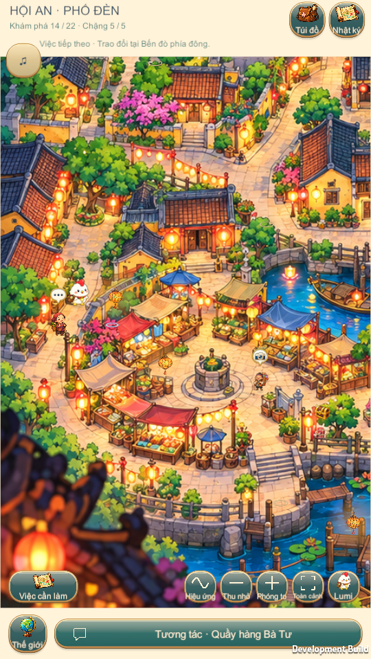
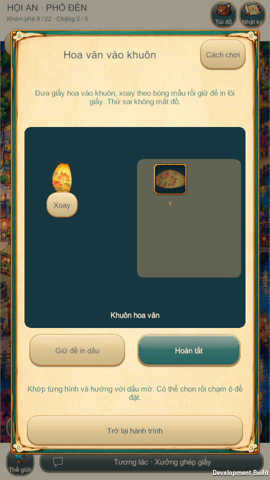

Actual dialogue - same partial-save journey



Real Windows Player frames. Rounded warm rims, soft shadows, subtle top glaze and a depressed pressed state. Same callbacks, text and touch bounds.









Existing H4 clue earned through its original action, then H13 activity opened. No invented before image.

Vietnamese report and changed files | Visual/input QA | Original callback regression | Protected inputs
Windows PASS. Android device/performance NOT_TESTED. No new APK.